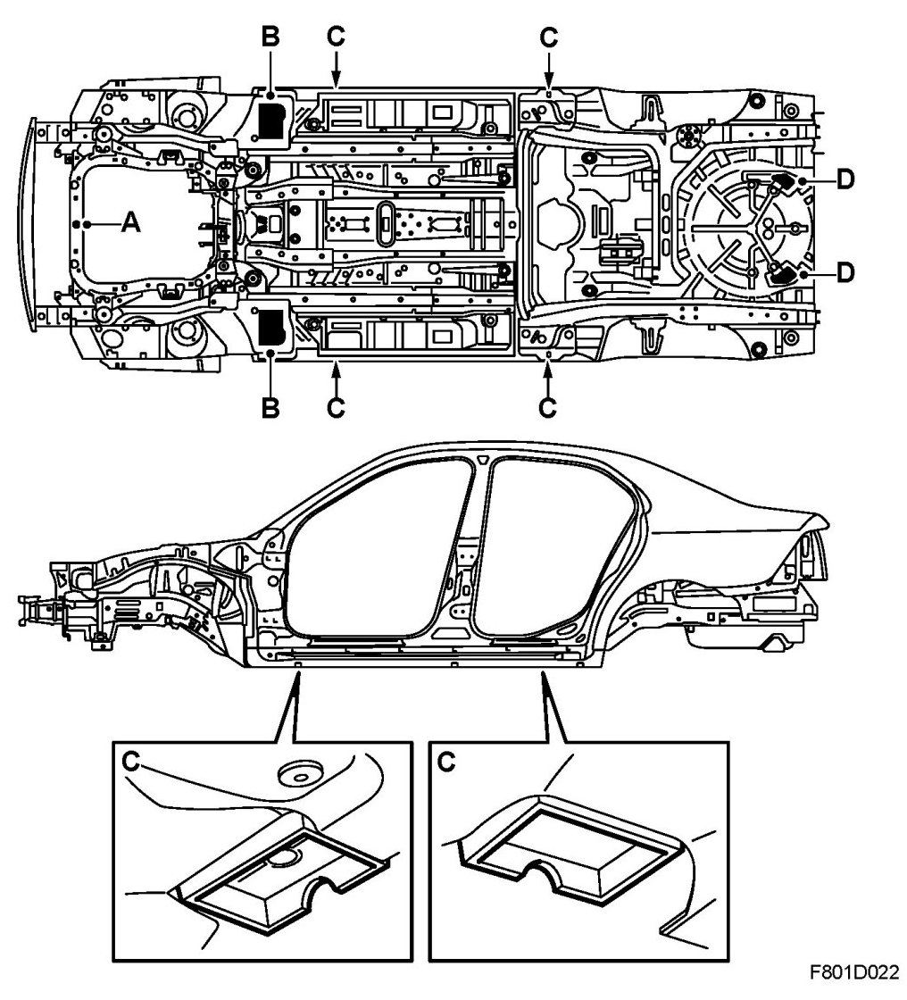

Repair and Diagnosis: Service and Repair
Lifting And Attachment Points
Be careful when the car is to be placed on a lift or when using a jack. The following illustration shows the lifting and fixing points which should be used.

A. Centered under the front subframe.
IMPORTANT:
- Make sure that the front subframe is not damaged and that the jack does not slip from the front subframe.
- Use axle stands when working under the car.
B. By hole in front floor reinforcement. This lifting point can be used when working on the rear of the car, for example when removing the fuel tank or rear axle.
C. At the jacking points under the sill members.
D. At the left and right-hand tow bar mounts or under the tow bar if a tow bar is mounted (rear towing eye).
WARNING: If incorrect lifting or attachment points are used, the car may be displaced or fall from its raised position, which may result in serious damage to the car or serious personal injury.
IMPORTANT: Do not lift the rear end of the car under the spare wheel well or rear axle as this can cause serious damage to the car.